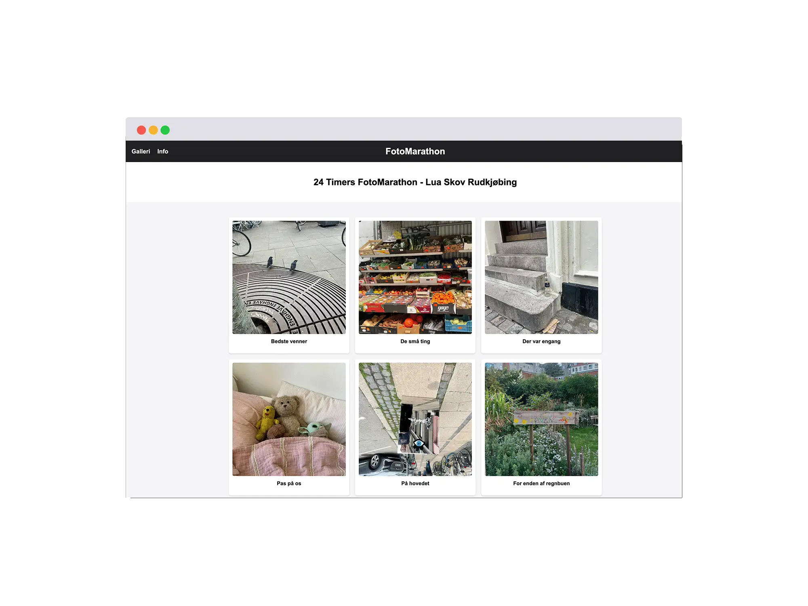
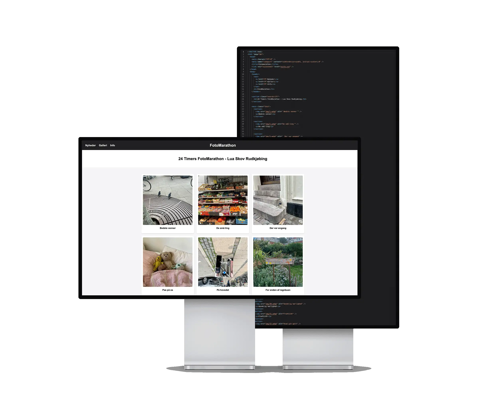
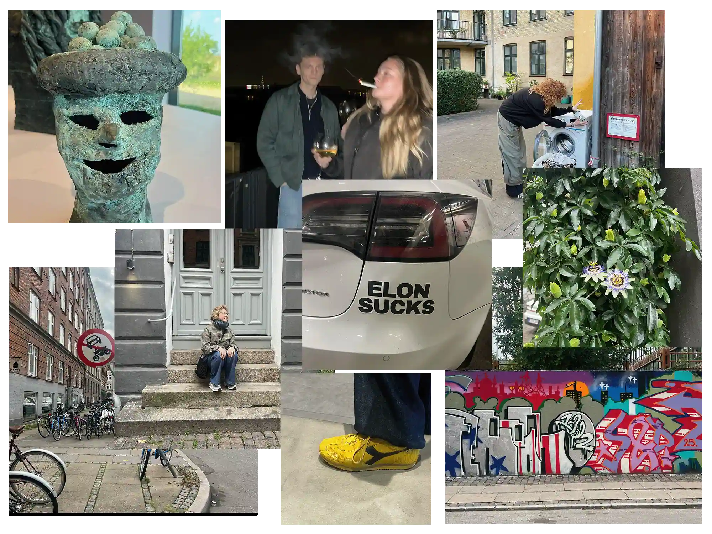
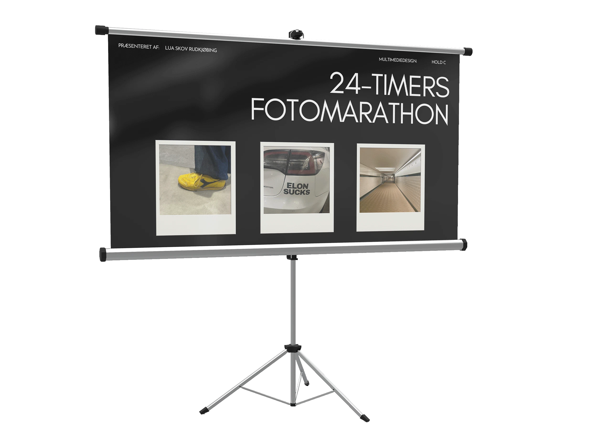

24-timers fotomarathon
Se hjemmesiden her
Opgave:
Opgaven var at tage 24 billeder over en periode på 24 timer, hvor hvert billede skulle repræsentere et af 24 givne ord eller sætninger. Herefter skulle der udvikles et website, hvor billederne blev præsenteret samlet i en digital løsning.
Løsning:
Jeg har udviklet et website med en enkel opsætning, hvor de 24 billeder præsenteres samlet med de tilhørende sætninger placeret under hvert billede. Farvevalget er bevidst holdt meget neutralt med sort, hvid og lysegrå nuancer, så fokus forbliver på billederne og deres indhold.

Proces:
Processen startede med idéudvikling, hvor jeg overvejede, hvilke typer billeder der kunne passe til de forskellige sætninger. Herefter gik jeg ud i bylivet og tog en række billeder af situationer og detaljer, som kunne fortolkes i forhold til de givne ord. Derudover havde jeg aftaler, hvor jeg tog billeder af personer. Da jeg havde udvalgt ét billede til hver af de 24 sætninger, begyndte jeg at kode websitet, hvor billederne blev samlet og præsenteret i en enkel og overskuelig opsætning.

Refleksion:
Opgaven var sværere end forventet, fordi det tog tid at finde motiver, der passede til sætningerne. Da jeg begyndte at fortolke dem mere frit, blev det nemmere, og opgaven gav nye perspektiver på, hvordan billeder kan forstås.
Læring:
Gennem denne opgave har jeg opnået erfaring med planlægning og produktion af visuelt indhold, hvor billeder er udvalgt og tilpasset et konkret formål. Jeg har arbejdet med billedkomposition og fortolkning samt fået forståelse for, hvordan billeder kan formidle forskellige betydninger afhængigt af kontekst. Opgaven har styrket min viden om billedformater til web og deres anvendelse i en digital løsning. Derudover har jeg opnået erfaring med opbygning af et enkelt og overskueligt website.
